01 시작하기 (가입·로그인)
회사(관리사무소)를 처음 등록하는 분은 회사 가입을, 초대를 받은 직원은 초대 링크로 가입합니다. 가입하면 14일 무료 체험이 바로 시작됩니다.
회사(관리사무소)로 처음 시작할 때
- 인터넷 주소창에 tanstack-start-app.anjeondesk.workers.dev 를 입력해 접속합니다.
- 첫 화면에서 회사 등록하고 시작하기 버튼을 누릅니다.
- 단지명·이메일·비밀번호만 넣으면 가입 완료 — 바로 14일 체험이 시작됩니다.
- 가입한 이메일·비밀번호로 로그인합니다.
초대받은 직원일 때
- 관리소장이 보내준 초대 링크를 열거나, QR 코드를 휴대폰 카메라로 찍습니다.
- 이름·비밀번호를 정하면 해당 단지 직원으로 가입됩니다.
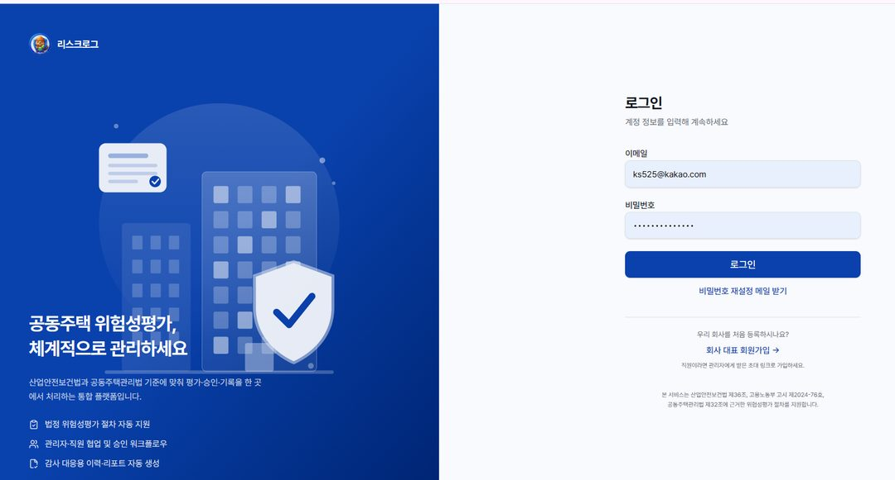
02 단지 등록과 직원 초대
평가를 하려면 먼저 대상 단지(사업장)가 있어야 합니다. 관리자(관리소장)만 등록·초대할 수 있습니다.
단지 등록
- 왼쪽 메뉴 관리 > 단지 관리를 누릅니다.
- 단지 등록 버튼을 누르고 단지명·주소·세대수·관리방식을 입력합니다.
- 저장하면 목록에 단지가 추가됩니다. 여러 단지를 관리하면 반복해서 등록합니다.
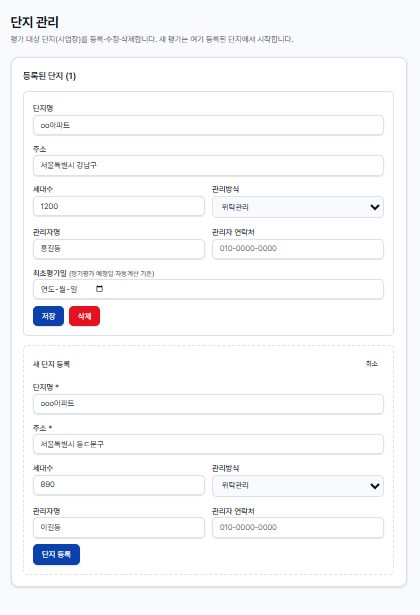
직원 초대 (선택)
- 왼쪽 메뉴 관리 > 직원 관리로 이동합니다.
- 이메일로 초대하거나, QR 초대 링크를 만들어 직원에게 전달합니다. 권한은 관리자 / 매니저 / 일반 중에 고릅니다.
03 대시보드 살펴보기
로그인하면 처음 보이는 화면입니다. 우리 단지의 안전 상태를 한눈에 보여줍니다.
- 상단 요약 카드 — 이번 달 평가, 높음·매우높음 미해결, 다음 정기평가 D-day, 기한초과 단지 수.
- 안전 활동 현황 — 진행/예정 점검, 개선 필요 항목, 이번 달 TBM, 진행중 허가서, 올해 교육. 카드를 누르면 해당 기능으로 이동합니다.
- 최근 목록 — 최근 평가·안전점검·TBM·작업허가서·아차사고 등.
- 새 평가 시작 버튼(오른쪽 위) — 위험성평가를 바로 시작합니다.
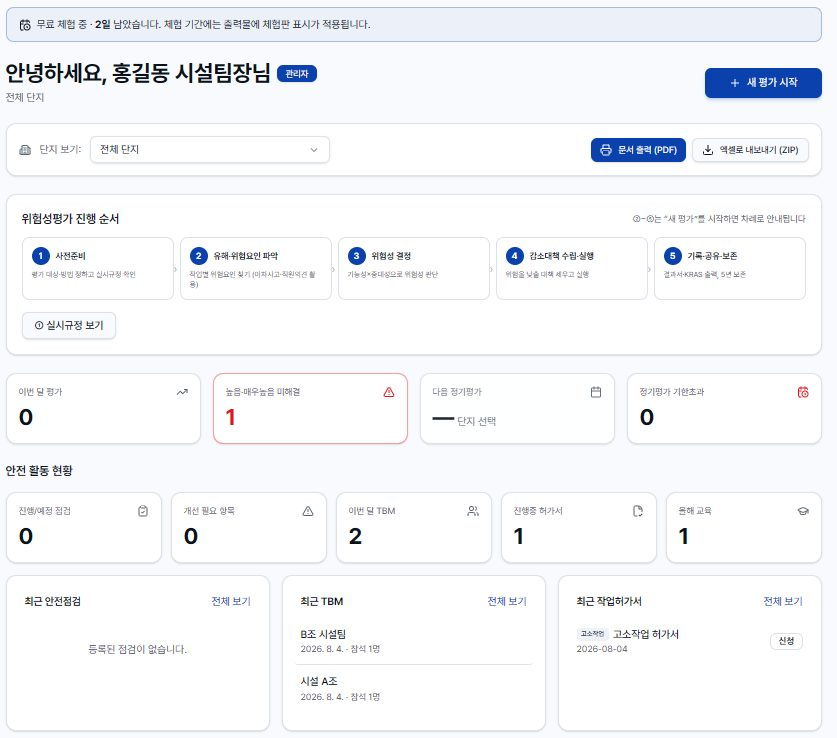
04 위험성평가 6단계
리스크로그의 핵심입니다. 새 평가 → 유해위험요인 → 위험성결정 → 감소대책 → 협의·공유 → 결과서 순서로 진행하며, 화면이 다음 단계로 안내합니다.
① 새 평가 만들기
- 대시보드의 새 평가 시작(또는 왼쪽 메뉴 위험성평가 > 새 평가)을 누릅니다.
- 단지·작업명·평가일을 정하고 평가방법을 고릅니다: 빈도강도법 / 3단계 / 5단계 / 체크리스트 / OPS 중 익숙한 방법.
- 이전에 한 평가가 있으면 과년도 평가 불러오기로 위험요인·대책을 그대로 복사해 시간을 아낄 수 있습니다.
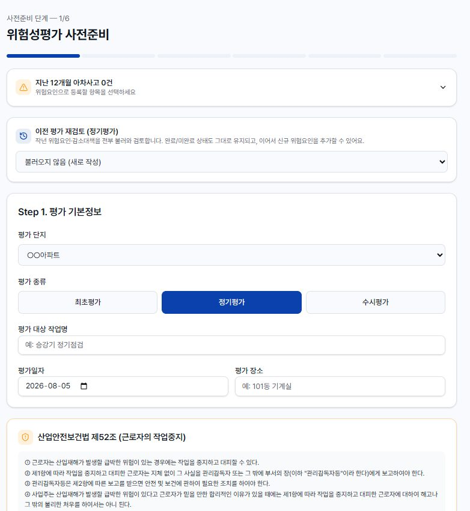
② 유해·위험요인 파악
- 유해위험요인 화면에서 위험요소를 추가합니다.
- 라이브러리에서 선택하면 조문·빈도·강도·대표 대책이 자동으로 채워집니다(587건 내장). 없는 항목은 직접 입력합니다.
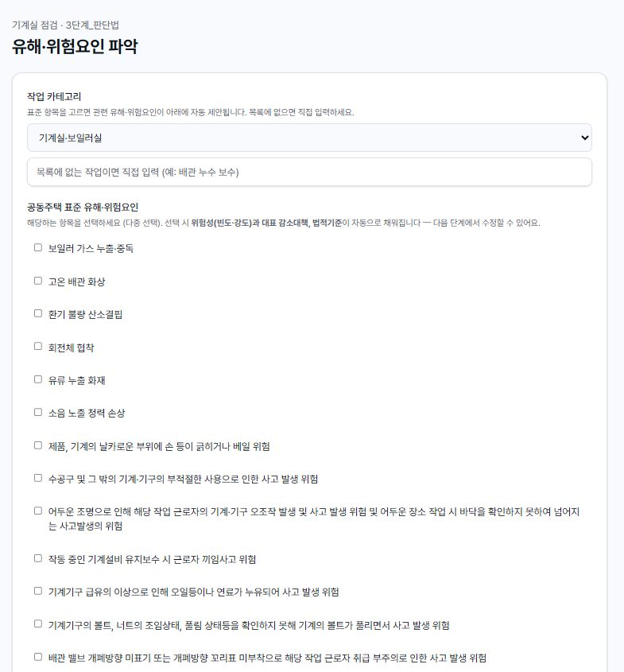
③ 위험성 결정
- 위험성결정 화면에서 항목별 가능성 × 중대성을 지정하면 위험도(매우낮음~매우높음)가 계산됩니다.
- 법적기준이 자동으로 매칭되어 표시됩니다. 참고용이므로 화면에서 확인·수정할 수 있습니다.
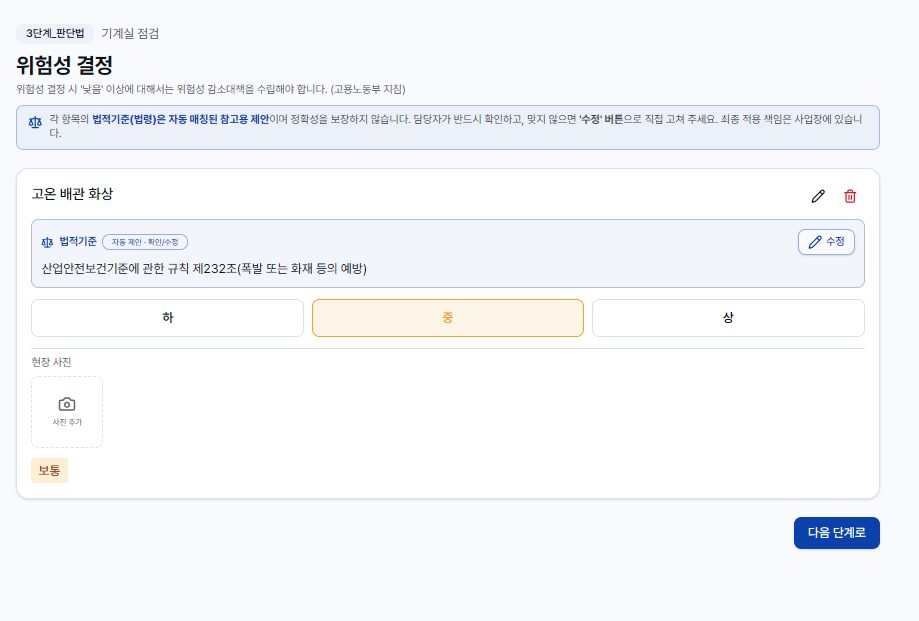
④ 감소대책 수립·실행
- 감소대책 화면에서 위험요인마다 대책을 적습니다: 대책 내용·책임자·이행 예정일·이행 상태.
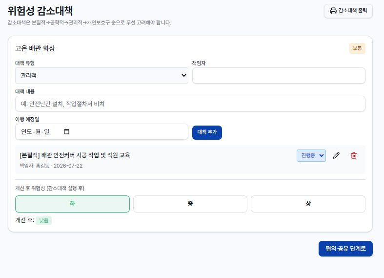
⑤ 협의·공유 (서명)
- 협의·공유 화면에서 참여자를 기록하고 서명을 받습니다(손가락/마우스).
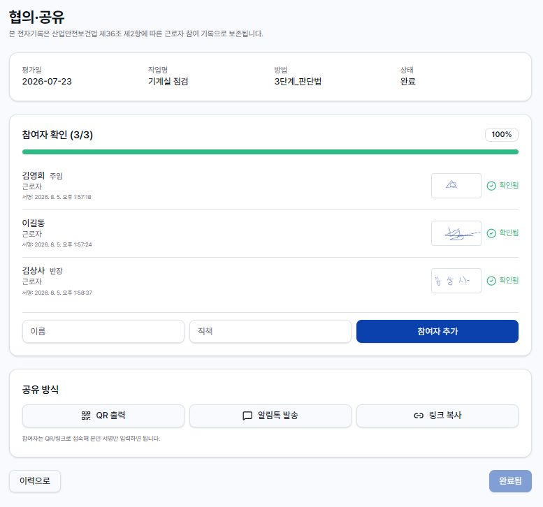
⑥ 결과서·KRAS 출력
- 결과서에서 전체 내용을 확인합니다.
- KRAS 양식으로 출력합니다(개별/전체). 안전보건공단 표준서식과 동일한 형태로 인쇄·PDF 저장됩니다.
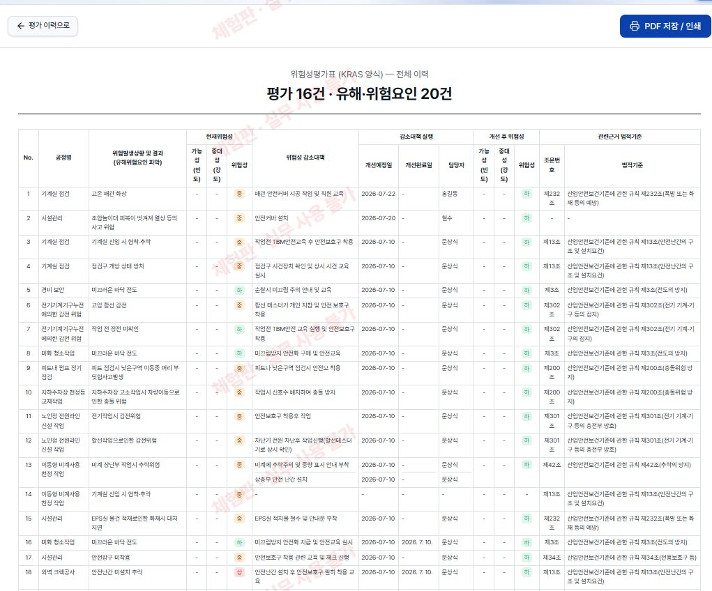
05 실시규정
왼쪽 메뉴 위험성평가 > 실시규정. 회사 공통 실시규정 문서입니다. 맨 위 사업장명을 바꾸면 본문의 {{사업장}} 자리가 단지명으로 자동으로 바뀝니다. 내용은 편집할 수 있습니다.
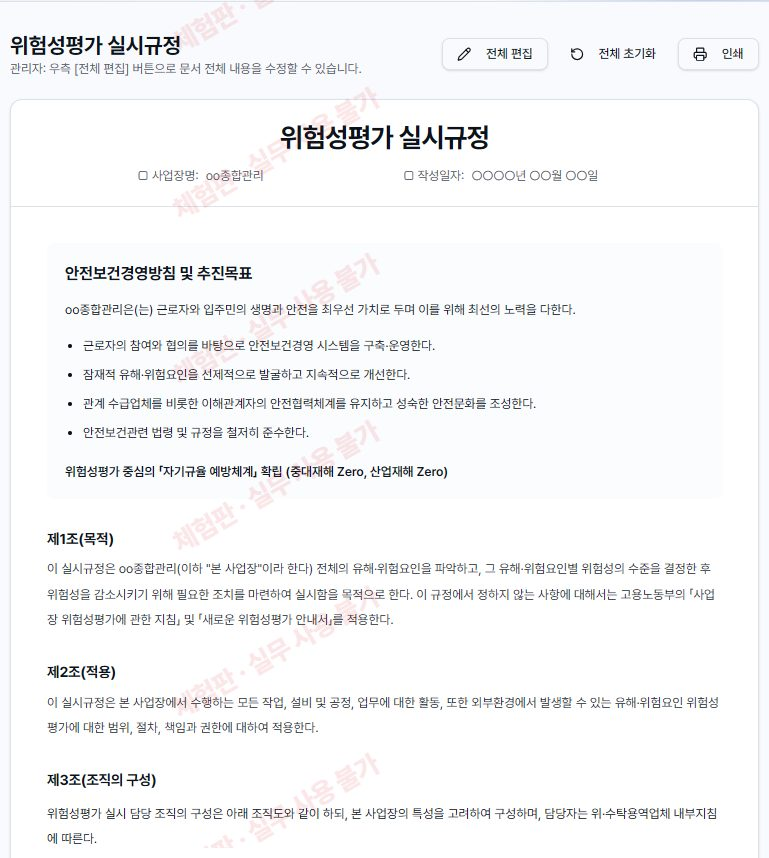
06 안전점검
왼쪽 메뉴 안전 활동 > 안전점검. 승강기·소방·저수조 등 공용시설을 체크리스트로 점검하고, 미흡·불량은 개선까지 추적합니다.
- 점검 만들기를 누르고 시설 분류(승강기·소방시설·전기실·저수조·놀이터·주차장·옥상·공용부·제설 등)를 고르면 표준 점검 항목이 자동으로 채워집니다.
- 점검 구분·예정일·반복 주기(매월/매분기 등)를 정하고 점검 생성.
- 항목마다 결과를 누릅니다: 양호 미흡 불량 해당없음.
- 미흡·불량 항목은 개선 필요사항·담당·조치 내용·사진을 적고 개선 완료에 체크합니다.
- 모든 항목 판정 + 개선 완료가 되면 점검 완료. 반복 주기가 있으면 다음 회차가 자동 생성됩니다.
- 우측 상단 출력으로 안전점검표를 인쇄/PDF 저장합니다.
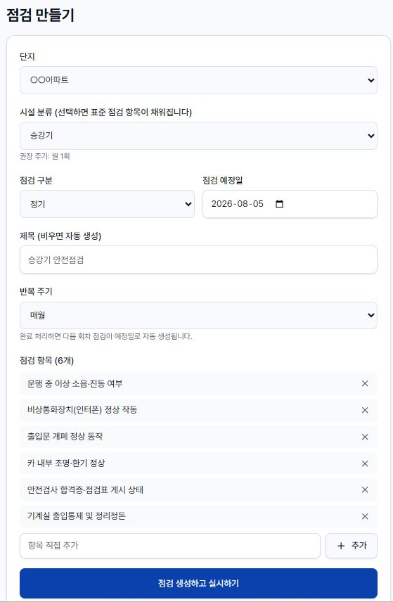
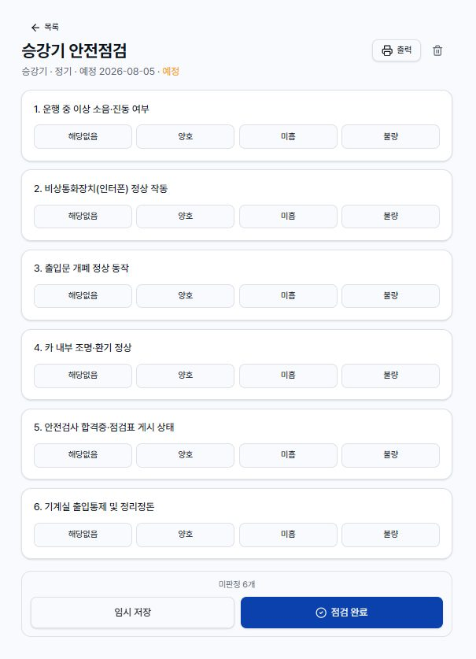
07 작업 전 안전미팅(TBM)
왼쪽 메뉴 안전 활동 > 작업 전 안전미팅(TBM). 미화·경비·시설 직원의 아침 조회를 기록하고, 교육 시간으로도 인정받습니다.
- TBM 작성 → 단지·조/작업명(예: A동 미화조)·일시를 정합니다.
- 이전 회차 불러오기를 누르면 지난번 참석자·위험요인을 그대로 가져와 매일 빠르게 작성할 수 있습니다.
- 참석자는 직원 명부에서 눌러 추가(11장 참고). 각 참석자의 건강상태(발열·음주·약물·보호구)를 체크하고, 이름 옆 서명을 받습니다.
- 오늘의 유해위험요인·대책을 추가(자주 쓰는 항목은 버튼으로 바로 추가)하고, 교육 인정 시간(분)을 넣습니다.
- 필요하면 결재라인(담당·검토·승인)에 서명하고 TBM 완료 → 출력으로 일지를 뽑습니다.
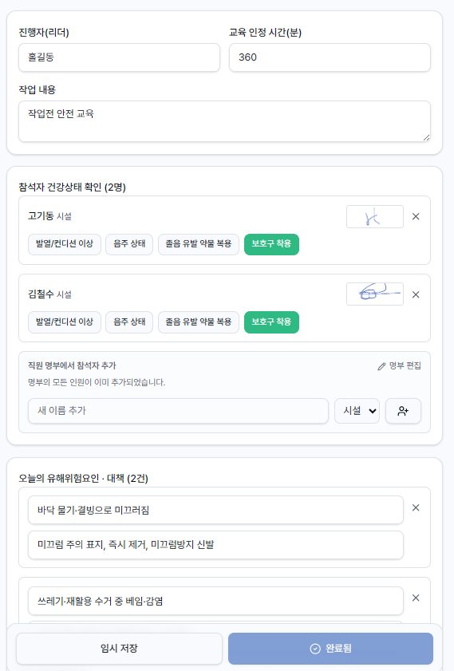
08 작업허가서
왼쪽 메뉴 안전 활동 > 작업허가서. 고소·밀폐공간·화기 등 위험작업은 착수 전 점검·허가를 받고 기록합니다.
- 허가서 작성 → 작업 유형을 고릅니다: 고소작업 / 밀폐공간 / 화기작업 / 전기작업 / 중량물. 유형에 맞는 점검 항목이 자동으로 들어옵니다.
- 밀폐공간·화기작업은 가스농도 측정(산소·가연성가스 등)이 필수로 표시됩니다.
- 작업책임자·감시인·작업 인원을 넣고, 착수 전 점검 항목을 양호/불량으로 확인합니다.
- 결재라인 승인자 성명을 넣고 작업 허가(승인) — 불량 항목이나 가스 미측정이 있으면 승인이 막힙니다.
- 작업이 끝나면 작업 완료 처리하고 출력합니다.
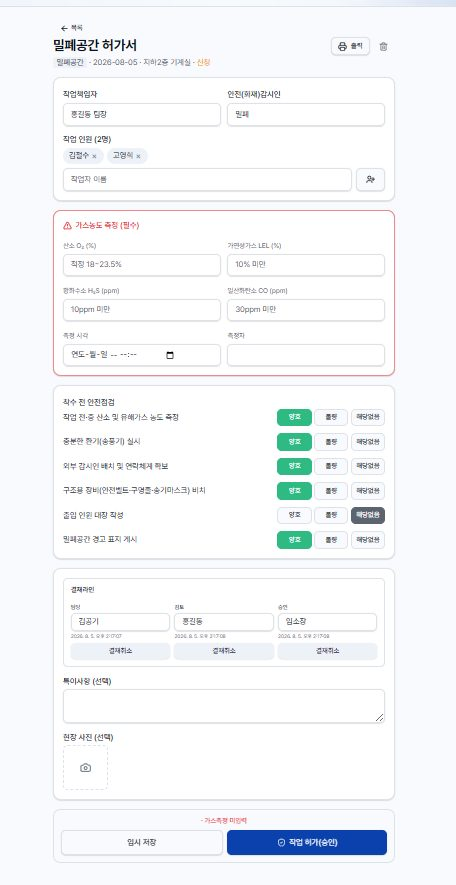
09 안전보건교육
왼쪽 메뉴 안전 활동 > 안전보건교육. 경비·미화 등 법정 교육을 실시·기록하고 이수현황을 관리합니다.
- 교육 등록 → 교육 종류(정기·채용시·특별 등)를 고르면 관련 법적 근거·표준 시간이 안내됩니다.
- 참석자를 직원 명부에서 추가하고 참석/이수를 체크, 이름 옆 서명을 받습니다. 외부 수료증은 사진으로 첨부합니다.
- 교육 완료 처리 → 목록 위 개인별 이수시간에서 올해 이수 현황을 볼 수 있습니다(TBM 교육시간도 자동 합산).
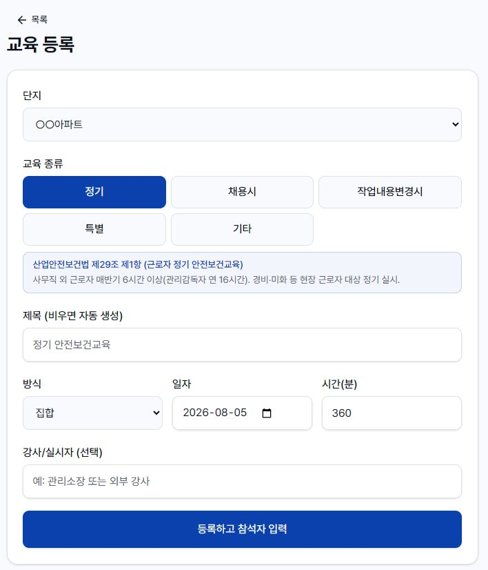
10 아차사고·작업중지·직원참여
아차사고
- 왼쪽 메뉴 아차사고 > 신규 신고에서 상황·장소·사진을 기록합니다.
- 급한 건은 🚨 긴급 신고에 체크하면 등록 즉시 관리소장(관리자)에게 이메일로 알립니다.
- 이후 재발 방지 조치를 기록하고 완료 처리합니다.
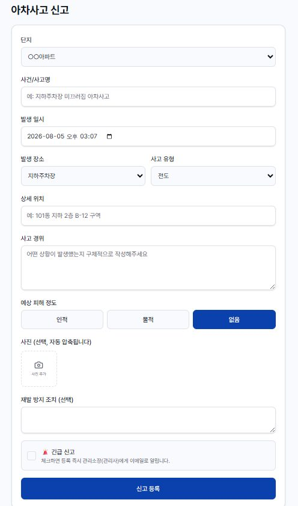
작업중지권 · 직원 참여
- 작업중지권 — 위험 시 작업을 멈춘 기록과 개선완료 확인서를 남깁니다.
- 직원 참여 — 청취조사(근로자 면담)와 단지 오픈채팅 이력을 기록합니다.
11 직원 명부와 서명
TBM·교육 참석자를 매번 손으로 적지 않도록, 단지별 직원 명부에서 눌러서 추가합니다.
- TBM 또는 교육 작성 화면의 참석자 영역에서 새 이름 추가로 이름·구분(미화/경비/시설…)을 넣습니다.
- 한 번 넣은 사람은 명부에 저장되어, 다음부터는 이름을 눌러서 바로 추가됩니다.
- 참석자 이름 옆 서명 버튼을 누르면 서명판이 떠서 손가락으로 서명합니다. 소장 기기 한 대를 돌려가며 받으면 됩니다.
12 문서 출력(PDF)
여러 문서를 한 번에 뽑을 때 씁니다. 감사·입주자대표회의 제출용으로 편리합니다.
- 대시보드 위쪽 문서 출력(PDF)을 누릅니다.
- 기간과 단지를 정한 뒤 인쇄 페이지 열기.
- 다음 화면에서 필요한 문서만 체크합니다: 실시규정·KRAS·안전점검·TBM·작업허가서·안전보건교육·아차사고·작업중지·청취조사·오픈채팅.
- 인쇄 / PDF 저장을 누릅니다.
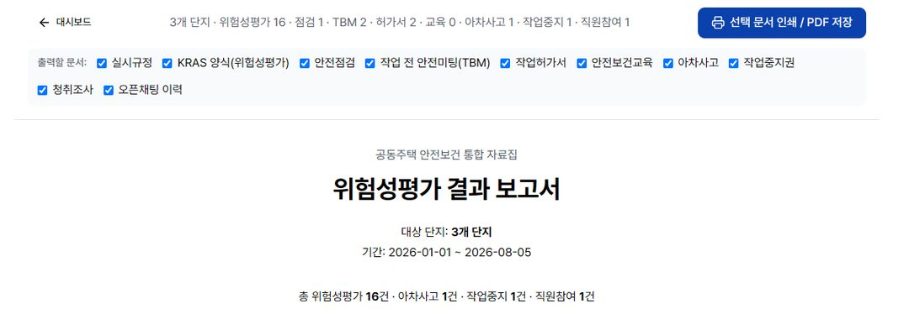
13 본사 콘솔 (여러 단지)
여러 단지를 관리하는 관리자용. 왼쪽 메뉴 관리 > 본사 콘솔. 단지별 안전 상태를 신호등으로 한눈에 봅니다.
- 한 줄 = 한 단지. 정기평가 기한·고위험·안전점검·TBM·교육·아차사고가 색으로 표시됩니다.
- 🔴 즉시 조치 🟡 주의 🟢 양호 — 문제 있는 단지가 맨 위로 자동 정렬됩니다.
- 행을 누르면 그 단지의 자료 출력 화면으로 이동합니다. "조치 필요만 보기" 필터도 있습니다.
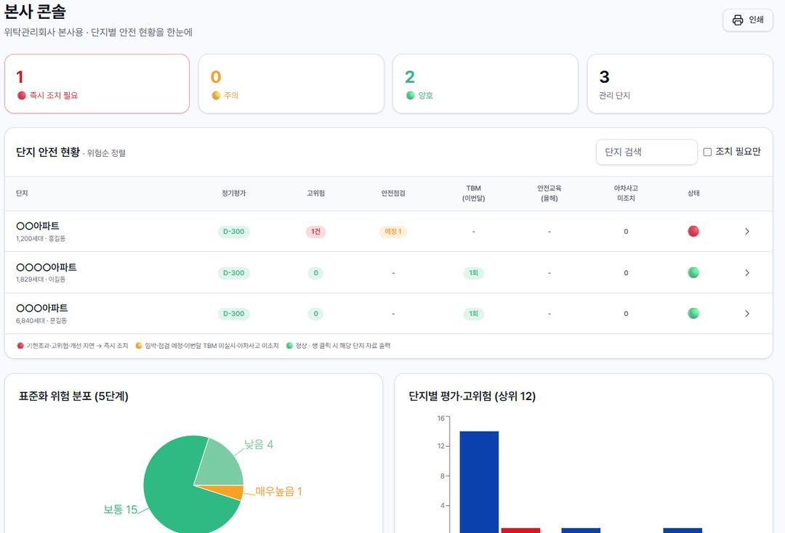
14 요금·정식 전환
- 가입하면 14일 무료 체험. 체험 중에는 출력물에 체험판 표시가 붙습니다.
- 체험이 끝나면 정식 등록(활성화) 신청을 하고, 승인되면 제한·워터마크가 풀립니다.
- 요금은 단지 세대수 구간별 정액제입니다(단지별 계산).
15 자주 묻는 질문
미화·경비 직원도 앱을 설치해야 하나요?
아니요. 계정이 없어도 됩니다. 직원 명부에 이름만 등록하면 TBM·교육 참석자로 부를 수 있고, 서명은 소장 기기에서 받으면 됩니다.
인쇄했더니 표 색·테두리가 안 나와요.
크롬 인쇄창에서 "배경 그래픽" 옵션을 켜 주세요.
평가방법을 여러 개 섞어 써도 되나요?
단지·작업마다 다른 방법을 써도 됩니다. 본사 콘솔에서는 5단계 기준으로 자동 환산해 함께 보여줍니다.
실수로 넣은 데이터를 지울 수 있나요?
각 상세 화면의 휴지통 아이콘으로 삭제합니다. 삭제는 되돌릴 수 없으니 주의하세요.
휴대폰에서 메뉴가 다 안 보여요.
휴대폰은 아래 탭바의 전체를 누르면 모든 메뉴가 나옵니다.
16 촬영 목록(체크리스트)
아래 화면들을 순서대로 캡처해서 보내 주시면, 이 매뉴얼의 그림 자리에 끼워 완성합니다. (로그인한 본인 PC/휴대폰에서 캡처하면 됩니다.)